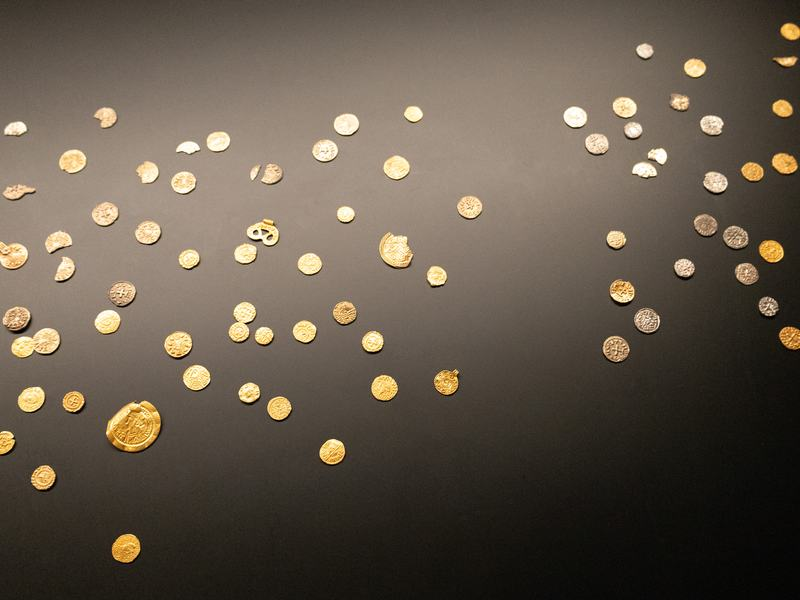
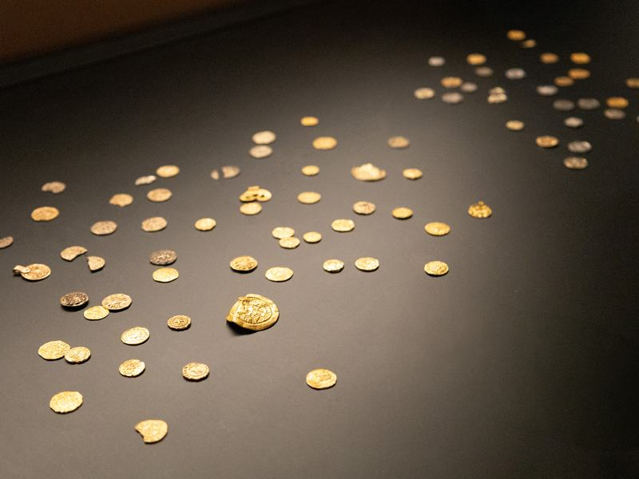
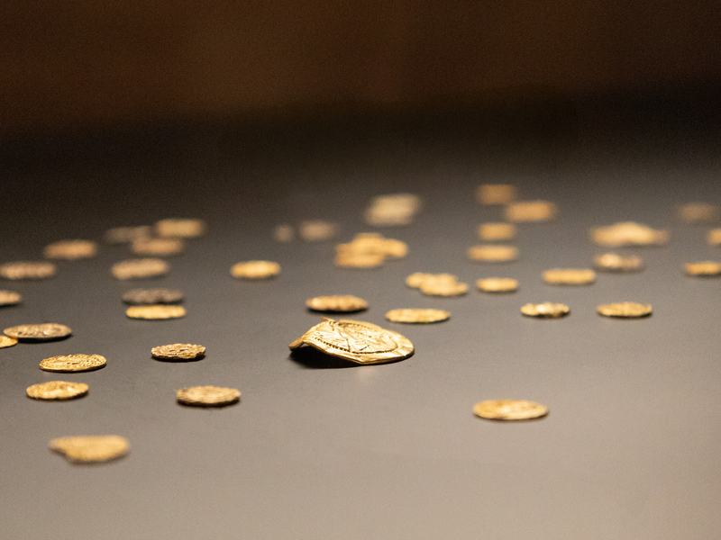
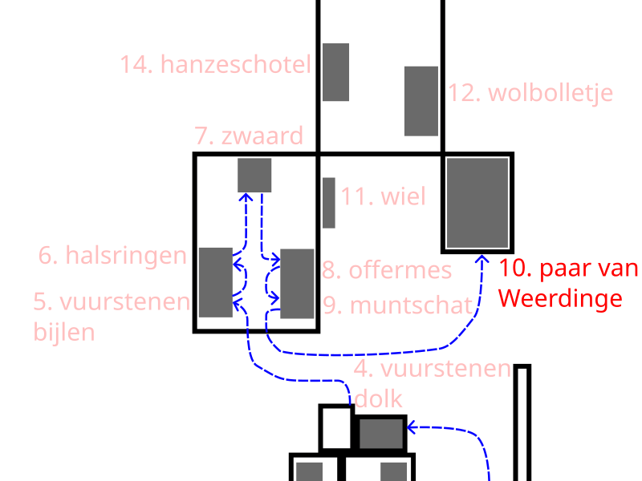

9. Hezingen Coin Hoard (590–700 AD)




In 2019, a remarkable collection of artifacts from the early Middle Ages—dating to around the 7th century AD—was discovered in Springendal near Hezingen. The collection includes gold and silver coins, jewelry, and other valuable objects.
The finds were not concentrated in a single location, but were scattered across several clusters close to one another. They were discovered at an intersection of ancient roads, along with traces of wooden posts and other structures. This suggests that the site was neither a settlement nor a burial ground.
Researchers therefore view this area as a sacred site, a place where people performed rituals and offered valuable objects. This likely did not happen just once, but on a regular basis, by various groups from the region.
So this isn’t a hidden treasure that someone wanted to keep safe. On the contrary, the objects were deliberately left behind as a gift, likely to the gods or higher powers.
This site is considered the largest and most thoroughly studied Merovingian cult complex in the Netherlands. “Merovingian” refers to the early Middle Ages, the period from approximately 450 to 750 AD.
In this way, Springendal demonstrates how important ritual sites were in the landscape, where people offered gold and silver at a specific, significant location.
Click the "More Info" button for more information about this coin hoard.
The next listening point is: The Weerdinge couple.